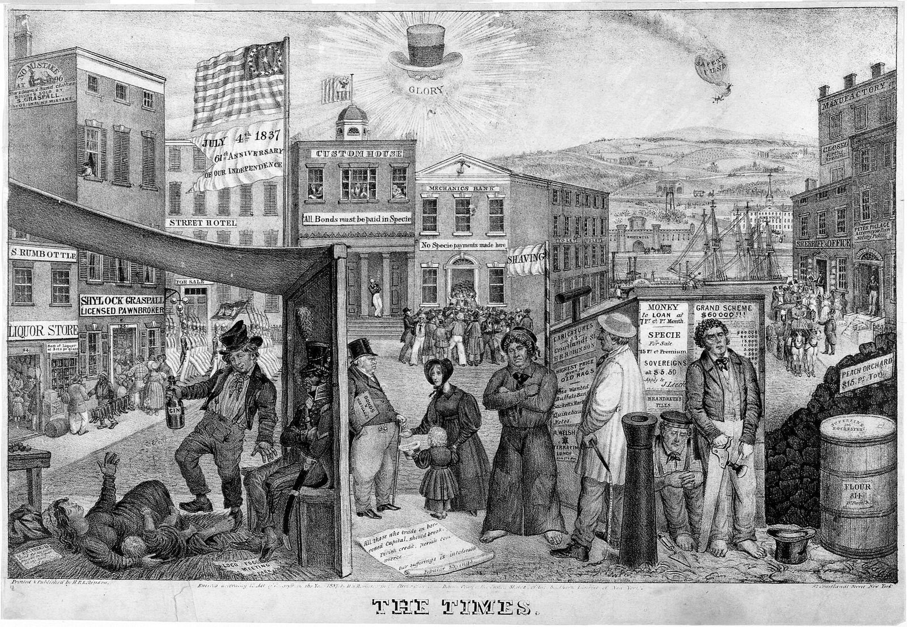
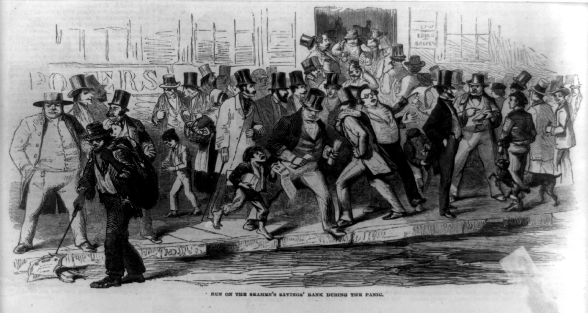
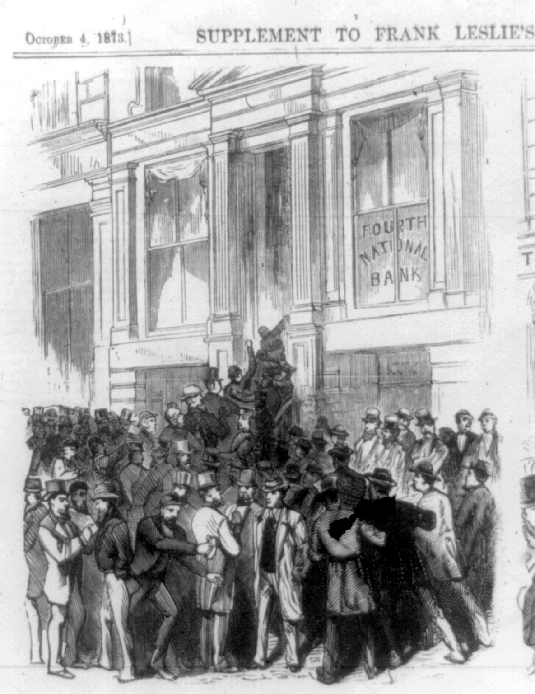

A guided reading of Myrmikan Research’s October letter
Three Targets, No Hits
The Treasury’s plan to push long-term interest rates down rested on three numbers. Daniel Oliver’s letter, “The 3 3 3 Plan,” argues that all three are off track, and explains why through tax breaks, A.I. debt, oil, the Fed, market history and gold. Here is the whole argument, theme by theme, with the lessons pulled out.
The letter in one minute
- The plan. Treasury Secretary Scott Bessent wanted lower long-term rates through a 3% budget deficit, 3% real growth and 3 million more barrels of oil a day.
- The scoreboard. The deficit is 5.8% of GDP, growth is 2.1%, oil output is up 0.3 million barrels a day, and the 10-year rate is “surging higher.”
- The causes. Tax write-offs feeding an A.I. buildout the letter doubts will pay, A.I. debt crowding into the bond market, and a war that pushed up energy prices.
- The response. Treasury bond buybacks that haven’t worked, and a Fed that raised rates instead of cutting them. Both ends of the yield curve are rising.
- The warning. Stocks keep making highs, as they did in 2007; a “1929” moment is coming; the president’s party will take the blame; and in the long run gold measures solvency.
The promise
Lower long-term interest rates were the key to the whole agenda. The letter starts by asking which rate matters.
The letter opens with a mood. “It’s morning again in America” was the first line of Reagan’s 1984 campaign commercial, and Oliver writes that normal Americans felt the same way when Trump regained office. p. 1
He lists the reasons. In the letter’s telling, Biden had humiliated the country with the “Saigon-like” collapse of Kabul and was “toothless” against Houthi piracy. He canceled pipelines, banned drilling for oil, and spent trillions on what the letter calls “the green energy scam,” then hundreds of billions on the war in Ukraine. Living costs spiked and inflation hit 1970s levels. The letter also cites transgender ideology, mass injections of experimental medicines, third-world immigration, threats to jail oil executives, criminal persecution of Republicans and the raid on Trump’s house. “Republicans wanted vengeance. Independents just wanted their country back.”
Trump, the letter says, arrived ready to lead this time. He promised to end the Ukraine war in his first 24 hours. He had entered politics condemning the Bush-era Middle East adventures, promising the country would spend its treasure on itself. He would rebuild industry, bring back blue-collar jobs and chase out third-world labor.
Key pointAll of it depended on cheaper money
“Trump’s economic plan required lower interest rates,” the letter says. But it was precise about which ones. Treasury Secretary Scott Bessent told reporters that the president “is not calling for the Fed to lower rates.” Instead: “He and I are focused on the 10-year Treasury and what is the yield of that.” p. 1
Two rates, two economies
What each rate sets the price of, according to the letter. Tap either side.
Source: Myrmikan Research, Oct. 8, 2026, p. 1.
Key pointThree numbers to bring long rates down
Bessent’s plan had three parts, each a 3. Bessent said Trump “got elected because of [Biden’s] affordability crisis,” and that “real wage growth for working Americans is the best way to fix this.” Scroll through the scoreboard. p. 1
The 3 3 3 scoreboard
Target (black line) against the latest figure in the letter. Each row has its own scale.
The letter gives no level.
Source: Myrmikan Research, Oct. 8, 2026, p. 1.
Get long rates lower with a budget deficit of 3% of GDP, real GDP growth of 3%, and 3 million more barrels of domestic oil a day “to bring down all prices.”
“The budget deficit is still 5.8% of GDP,” nearly twice the target.
“The latest real GDP growth figure is 2.1%,” below the 3% goal.
Domestic production has risen “from 13.5 million bbl/day only to 13.8 million.” That’s 0.3 million of a promised 3 million, or 10% of the target.
“But the 3 3 3 Plan is not working.” And the rate the plan was built to lower, the 10-year, “is surging higher.”
The cash-flow test
Bessent says the deficit is swollen by an investment. The letter asks whether that investment will ever pay.
Bessent has asked the market to look past the deficit numbers. Part of the gap, he said, comes from tariff refunds, which are temporary: “we won’t have to do that again,” and the same level of tariffs is being reimplemented. The other big item is the revenue lost to “the immediate expensing of factories and equipment and farm structures.” In his words, “that’s not government spending, that is an investment in the future, and we’re increasing the tax base.” pp. 1–2
Key pointThe write-off moved forward, decades early
Trump’s One Big Beautiful Bill Act lets businesses deduct 100% of certain capital equipment, such as microchips, in the year they buy it, instead of spreading the expense over years or decades. For a limited time, the full cost of nonresidential construction dedicated to production is also deductible immediately, instead of over thirty-nine years. p. 2
Thirty-nine years, or one
Running total deducted on a hypothetical $100 of qualifying construction, by year, under each rule. Hover or tap the chart for any year.
Illustration of the rule as the letter describes it (p. 2). The 39-year case is simplified to equal yearly slices of about $2.56 (a straight line); the letter doesn’t describe the actual depreciation conventions.
The break has a deadline. It applies only to property where construction begins by January 1, 2029, and which is placed in service before January 1, 2031. That, the letter says, “is why the A.I. datacenter buildout is so manic” among companies with enormous cash flows. They are the largest taxpayers, so they save the most through what the letter calls “this tax haven.” p. 2
The clock behind the buildout
Dates in the letter that bear on the A.I. spending rush.
Source: Myrmikan Research, Oct. 8, 2026, p. 2.
Key pointThe bond market is the judge
The letter reads the market’s reaction as a verdict. If investors agreed that these investments will produce significant cash flow, rising deficits would not make them demand a higher yield on long-term U.S. debt. Yet the 10-year is rising. p. 2
Myrmikan’s August letter, cited here, argued that A.I. data centers will not add to productivity over any reasonable timeframe, will not have pricing power, and will not produce significant cash flows or tax revenue. If that is right, the letter says, the tax revenue given up today is pure loss. p. 2
Who buys the debt
Bessent blames A.I. borrowers who don’t care what they pay. The letter looks at who is lending to them.
Besides deficits, Bessent blames competition from A.I. bonds for pushing Treasury yields up. “A lot of that corporate issuance is almost yield agnostic,” he said, because the companies believe the returns on the A.I. build-out will be “so high, they don’t really care what they are paying.” p. 2
The letter says he is “half right.” Investors indeed don’t care what they pay, but for a different reason. The marginal buyers are life insurance companies that private-equity firms have captured.
Where the insurers’ money goes
The mechanism the letter describes, before and after private-equity ownership.
Source: Myrmikan Research, Oct. 8, 2026, p. 2. The letter gives no dollar flows, so none are shown.
Key point“The figures are staggering”
Debt tied to artificial intelligence has “ballooned past $1.2 trillion, or 15% of the investment-grade market.” Goldman Sachs estimates the five hyperscalers alone will issue another $420 billion in 2027. And by Michael Burry’s estimates, the hyperscalers carry more than $3 trillion of off-balance-sheet liabilities. p. 2
The A.I. debt pile
Billions of dollars. A pointed end marks a “more than” figure.
of the investment-grade market is debt tied to A.I., per the letter. Each square is 1%.
Source: Myrmikan Research, Oct. 8, 2026, p. 2, citing Goldman Sachs and Michael Burry. The bars measure different things (debt outstanding, one year’s forecast issuance, off-balance-sheet liabilities) and are shown together only for scale.
Activity isn’t wealth
The A.I. money also flatters the second target, growth. That, the letter says, exposes what GDP really measures.
Much of this “wall of financial capital” needs to be spent before 2031 to claim the tax benefit. All that spending lifts Bessent’s second target, GDP growth. The letter calls this the problem with GDP: “it is a measure of activity, not wealth creation.” p. 2
Then comes the harder point. The letter expects Solow’s paradox to push A.I.’s real productivity gains into the distant future. If it does, much of this debt will default. And the money won’t just move elsewhere.
“The financial capital will not flood back into Treasury bonds to lower yields, it will simply cease to exist, along with the value of the data centers it financed.”Myrmikan Research, p. 2
So the 2.1% growth figure already includes the A.I. buildout. Real productivity growth, which the letter also calls “taxable growth,” must be “even further away from Bessent’s 3% target.”
Growth, with and without the buildout
Real GDP growth against the target. The letter gives no figure for “taxable growth,” so it is drawn as an open range.
Source: Myrmikan Research, Oct. 8, 2026, pp. 1–2.
Oil, war and the pump
The third target was supposed to bring all prices down. Instead, war has taken over energy prices.
Over the first half of Trump’s term, domestic oil production has increased by only 10% of Bessent’s target. p. 2
Barrels promised, barrels delivered
U.S. domestic oil production, millions of barrels a day. Drag to see how far the target was.
Source: Myrmikan Research, Oct. 8, 2026, pp. 1–2. The 16.5 goal is the starting 13.5 plus Bessent’s 3 million target.
Key pointNow war sets the price
“And now war is the only story that is relevant to energy prices.” Oil has risen 56% this year, from $57 a barrel at the start of the year to $89. Gasoline has jumped 89%. The letter gives three reasons: underinvestment in U.S. refineries, capacity shut in Europe “from climate paranoia,” and capacity destroyed in Russia by Ukrainian drones. The gas price rise was so damaging politically that Trump briefly threatened to ban diesel exports to bring domestic prices down. pp. 2–3
What the war did to fuel prices
Change since the beginning of the year.
Source: Myrmikan Research, Oct. 8, 2026, p. 3. The letter gives gasoline only as a percentage change.
Trump has asked voters to accept the cost. The letter sets his words beside Biden’s from the Ukraine war, saying Biden “said just about the same thing.” p. 3
The letter says this cost Kamala Harris the presidency, and predicts that Trump’s war will cost him control of Congress and get him, his family and his supporters investigated, impeached, “perhaps imprisoned.”
Playing the house
With the plan “in shambles,” the Treasury went straight at the bond market. Here is how the trade works, and its hidden cost.
In August, “under the cover of summer illiquidity,” Bessent used money in the Treasury General Account to buy back long-term bonds “to club yields lower.” The letter says the move “makes a kind of sense.” Scroll through the arithmetic, using the letter’s own example. p. 3
The buyback, by the numbers
The letter’s example: $2 billion of 30-year bonds with a 1% coupon.
Source: Myrmikan Research, Oct. 8, 2026, p. 3. Annual interest is simple coupon × principal, worked from the letter’s figures.
Some of these thirty-year bonds “were issued with yields as low as 1%.” On $2 billion of face value, that is $20 million of interest a year.
The 30-year yield has risen to 5.7%. So the market prices of those 1% bonds “have collapsed by upwards of 50%.”1
So Bessent “can spend $1 billion to buy back bonds that have a face value of $2 billion and thereby shrink the national debt by $1 billion.”
The Treasury was paying 1% on the $2 billion. Now it “must pay 4–5% on the $1 billion of newly issued debt,” so the deficit rises by 2–3% of the $1 billion. Drag the slider across the letter’s range.
The debt’s average maturity falls as 30-year bonds are replaced by short-term bills, “making federal government funding more sensitive to short rates.”
Key pointAn old trick, used harder
The buyback builds on an earlier tactic. Janet Yellen, the letter says, “figured out that over issuing bills would juice the markets because bills function as reserves in the banking system.” More bills also meant fewer long-term bonds, and that smaller supply pushed their prices up and their yields down. p. 3
Nouriel Roubini named the practice Activist Treasury Issuance. As a private citizen, Bessent criticized it as “a kind of Treasury-sponsored QE.” As a government official, he has continued Yellen’s strategy, and he is now “actively intervening to twist the Treasury curve further.”
“The problem is that it isn’t working.” Bessent kept promising bigger and bigger interventions, hoping traders would front-run him and “do his work for him.”
“I am the house now.”Scott Bessent, as quoted in the letter, p. 3
Long-term Treasury prices have kept falling all the same, with yields reaching “the highest in decades.”
Who sets rates?
The new Fed chair was supposed to cut. In mid-September the Fed raised rates instead. The letter weighs the debate and three explanations.
“And then in mid-September, the Fed raised the overnight fed funds rate.” Kevin Warsh “was supposed to lower rates.” Trump had told supporters to expect “something that’s really spectacular,” and spelled out the arithmetic. pp. 3–4
Trump’s arithmetic
“Every [percentage] point is six hundred billion dollars.” These are Trump’s numbers as the letter quotes them, not an estimate by the letter.
Source: Myrmikan Research, Oct. 8, 2026, pp. 3–4. Trump: “if we went down two points, we don’t have a deficit any more. And that’s without cutting, and it’s just a paper charge.”
Warsh, for his part, had “applied for the job” by writing that “AI will be a significant disinflationary force,” an argument for rate cuts. But consumer prices are rising again as energy costs feed, “with varying lags,” into the price of every good and service. p. 4
The debateDon’t hike into a supply shock?
Peter Navarro, Trump’s main economic advisor, argues the Fed shouldn’t raise rates into a supply shock. Rate hikes are meant to take cash out of the system so prices stop rising. Higher oil prices are already doing that, so raising rates “is to hit the economy twice.” p. 4
The letter grants that “Navarro’s narrow point may not be wrong.” But financial conditions “must still be far too loose,” it says, if stocks keep hitting all-time highs and Wall Street can sell A.I. debt as investment grade.
Explanation 1Does the Fed set rates, or follow them?
This, the letter says, was “the real issue” at the September meeting, and reasonable minds differ. One view holds that “the 2-year rate, for example, is nothing more than the average-expected overnight rate over the ensuing two years (otherwise there would be an arbitrage).” The Fed sets the overnight rate, so it controls the 2-year and, through it, longer rates. p. 4
How a 2-year rate averages the overnight path
Illustration only. Drag the four sliders to set an expected overnight rate for each half-year. The dashed line is their average, the 2-year rate under this view. No real rates are shown.
Concept: Myrmikan Research, Oct. 8, 2026, p. 4. The bars have no units; this is a teaching illustration, not data.
The other view: “the Fed does not set rates with speeches, it does so with market actions or threats of actions.” Before the meeting, the market had already priced in a quarter-point hike. Had the Fed held, would traders have bought bonds themselves to bring the rate back down? Or would the Fed have had to “wade into the market and jam bond prices sufficiently higher” to hit its target, and buy how many bonds? “The governors probably did not want to risk finding out the answer to these questions.” p. 4
Explanation 2Politics
“Another strong possibility,” the letter says, “is that FOMC members just hate Trump and want him to fail in the midterms.” Its evidence is a Bloomberg column by William Dudley, former president of the New York Fed. The letter stresses these words were published, “not overheard in some dark hallway.” p. 4
“There’s even an argument that the election itself falls within the Fed’s purview.”William Dudley, in Bloomberg, as quoted in the letter, p. 4
Dudley wrote that he supported Fed officials’ wish to stay apolitical, but that “Trump’s ongoing attacks on Powell and on the institution have made that untenable,” and that Trump’s reelection “arguably presents a threat to the U.S. and global economy, to the Fed’s independence and its ability to achieve its employment and inflation objectives.” The letter says these words likely explain why Powell cut rates by 50 basis points right before the 2024 election, and may help explain the current tightening.
Explanation 3The chair doesn’t control the board
Powell is no longer chairman but stays on the committee until January 2028, and the letter says he “surely has more influence with his FOMC colleagues.” Warsh doesn’t control the committee, so he votes with it. Dissenting on his first vote as chairman “would have been absurd.” Trump admitted as much: “I’m relying on Kevin. But he has a very tough board. . . . I said ‘You might as well vote with the board because it’s not going to matter.’” p. 4
The result: both ends of the curve rising
A schematic of the letter’s conclusion. It has no numbers because the letter gives no levels.
Schematic based on Myrmikan Research, Oct. 8, 2026, p. 4: “the short-end of the yield curve is rising, the long-end is also rising, interest costs are going to continue to climb, worsening the deficit further.”
Markets ignoring the warnings
The world’s largest bond market is in meltdown, yet stocks keep making highs and gold has been sluggish. The letter points to a precedent.
The letter calls gold “surprisingly sluggish in the face of the meltdown of the largest bond market the world has ever known.” It finds it “even more perplexing” that the S&P 500 keeps making all-time highs. p. 5
The reasoning is simple. As the risk-free return on dollars rises, “especially as dramatically as now,” investors should move the marginal dollar out of stocks and into debt, all else being equal. The exception would be a market expecting an inflationary inferno, “but in that case gold would be multiples higher.”
The letter avoids predicting short-term moves. Those, it says, are generally predictable “accurately only to traders at money-center banks who see real-time liquidity flows.” But it offers a precedent. p. 5
2004–2009: rates up, stocks up, then down by half
Fed funds rate (dots) and the stock market’s high and fall, as described in the letter.
Source: Myrmikan Research, Oct. 8, 2026, p. 5. Only the dated figures the letter gives are plotted. The dashed line just connects them; the real rate path isn’t shown. The end of the decline is approximate.
The fed funds rate stood at 1%.
Three years later it had reached 5.3%.
Bernanke explicitly warned that mortgage delinquency rates had risen sharply. Two internal Bear Stearns real estate funds collapsed. Europe’s second-largest bank faced a run on its real estate funds. (The letter doesn’t date these.)
Despite all of it, the stock market made an all-time high.
“Stocks would crash by more than half over the ensuing eighteen months.”
Key pointA narrow, propped-up market
The letter lists the strains in today’s market. Stocks are supported by passive flows. A third of the S&P 500 is priced off A.I. malinvestment. The yield on A.I. debt is soaring along with Treasuries. And UBS reports that investment outside technology “has effectively been in recession for at least two years.” Its conclusion: “a ‘1929’ moment is coming.” p. 6
The index versus the typical stock
Year-to-date gain.
of the S&P 500 is “being priced off A.I. malinvestment,” per the letter.
Source: Myrmikan Research, Oct. 8, 2026, p. 6.
The party in power pays
Trump is already blaming Democrats for a crash. The letter says history doesn’t work that way.
Trump, the letter says, is aware of the danger and is trying to shift the blame. Three weeks before taking office, he tweeted: “I call it ‘1929’ because the Democrats don’t care what our Country may be forced into. In fact, they would prefer ‘Depression’ as long as it hurt the Republican Party.” p. 5
He hoped to play Roosevelt to Biden’s Hoover: a sudden crisis would have let him remake the country’s political and financial foundations. “But the bubble was too strong and kept inflating.” Last Saturday he tried again: “If the Democrats win, you will have an economic depression much like 1929.” The letter’s reply: “no one will hold Congressional democrats responsible for a crash—the president’s party always takes the blame.” Scroll back through the history it cites. p. 5



The double panics “ended Democrat Party dominance in favor of the Whig Party.”
The Panic of 1857 “drove the Democrats from power in favor of the newly constituted Republican Party.”
“The Republicans were routed after the Panic of 1873.”
“Before that Hoover to Roosevelt.” This is the handover Trump had hoped to repeat, casting himself as Roosevelt to Biden’s Hoover.
“It was the Democrats who owned the collapse of the dollar, heralding the Reagan revolution.”
“In 2008 it was Republicans under Bush,” which the letter says ushered in “a closet Marxist regime.”
The letter expects Trump’s war to cost him control of Congress. In its view the president’s party always takes the blame.
How history may judge
Midterm voters may be harsh. The letter thinks history will be kinder to Trump.
“For all of Trump’s flaws, we think history will be kinder to him than midterm voters will be.” He was right to encourage domestic capital investment, the letter says. And with distance, people may concede that he did not design the financial system that lets private-equity bosses “pilfer capital from the prudent and earn fees deploying it into malinvestments.” p. 5
Nor, the letter argues, is the Iran war a repeat of “the Bush nation-building lunacy.” It lists the many ways the war can be read. Trump himself has clearly stated only one aim, the nuclear deterrent, leaving his constituents to argue over what other aims, if any, are at work. The letter calls the last two readings “arguably causes worth fighting for.” It says history may judge the outcome “as commentary on Western virility rather than imperialist folly.” p. 5
Eight readings of the Iran war
The interpretations the letter lists. Filter them.
Source: Myrmikan Research, Oct. 8, 2026, p. 5.
Finally, the letter calls DOGE, Trump’s “heroic charge against the bureaucracy,” commendable: “bureaucracy kills empires.” But it warns that his failures threaten to return the “uniparty” to power. The only difference it sees between Democrats and mainstream Republicans is “how fast they wish to submit America to the pathologies promoted by the Biden cultural arsonists.” p. 6
Gold measures solvency
If a crash comes, will gold fall with it? The letter’s answer depends on the time frame.
“Will gold plunge with the market, as it did from March to November of 2008? Or as it did during COVID?” The letter uses the COVID panic to show how such a dip can play out. p. 6
Gold in the COVID panic
Closing price, dollars per ounce, spring 2020.
Show the numbers
| Date | $/oz |
|---|---|
| Mar. 3, 2020 | 1,687 |
| Mar. 19, 2020 | 1,480 |
| Mid-April 2020 | “above 1,700” |
Source: Myrmikan Research, Oct. 8, 2026, p. 6. Lines just connect the letter’s three figures. The mid-April point is approximate in date and level and is drawn hollow at $1,700. The 12% drop is our arithmetic on the letter’s two prices.
Gold closed at $1,687 an ounce.
“As the panic took hold,” it closed at $1,480, about 12% lower.
“Gold was above $1,700 by mid-April.” Investors “had seen the movie before—they knew the Fed was going to print, and print big.”
The letter grants that it “would make sense that sharply higher rates in the global reserve currency should pressure asset prices.” Then comes its central claim. p. 6
“Wherever short term liquidity pushes gold, in the long term gold measures solvency. And the U.S. government is insolvent.”Myrmikan Research, p. 6
The insolvency, the letter argues, feeds on itself. “The higher yields rise, the more insolvent it becomes, and the more insolvency concerns should push yields higher.” Step through the loop.
The insolvency loop
The letter’s closing argument as a cycle.
Source: Myrmikan Research, Oct. 8, 2026, p. 6.
The letter closes with one more line: “And imagine how much worse it will be if the Democrats do wrest back power.” p. 6
Seventeen lessons from “The 3 3 3 Plan”
Every lesson above, in reading order. Each links back to its place in the story.